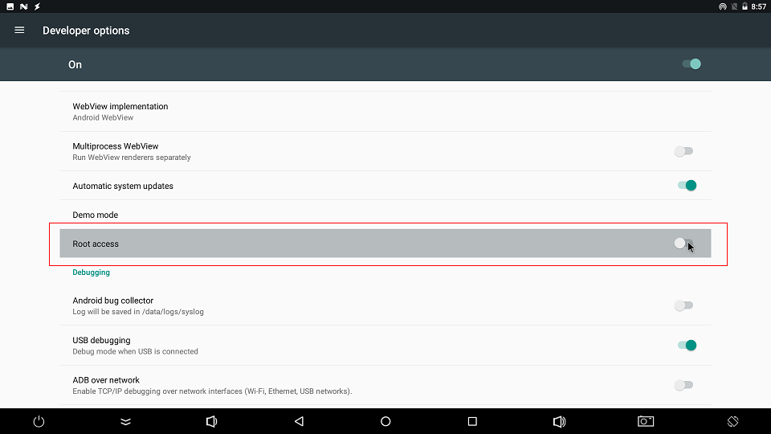

FAQS¶
RK3399 HDMI 4K Resolution¶
RK3399 firmware default support HDMI 4K resolution output, corresponding UI is 2K resolution stretch to 4K mode, However, some users need point-to-point 4K UI. 4K UI issue as follows:
1.Is it necessary to use 4K UI?
If you just want 4K video or 4K images, there is no need to configure 4K UI, as the system’s default video player and image browser can support.
2.How to configure 4K UI?
Configure the FrameBuffer to 4K, and then make sure the HDMI resolution is set to 4K, as follows:
android7.1/android8.1
persist.sys.framebuffer.main=3840x2160@60
android9.0 and after
persist.vendor.framebuffer.main=3840x2160@60
3.Flicker appears after configuring the 4K UI
For details, see the [documentation]
Open Root permissions¶
There are many powerful functions of the Android system that require root permissions. Developers often encounter permissions problems when using them. How to enable the root permissions of the system on the Firefly platform? Firefly has added the function of starting root privileges in the system. The specific steps are as follows:
Find
About deviceinSettgins apkand click into it;After clicking on
Build number5 times, it will prompt (you are now a developer);Then return to the previous level and click the option
Developer options, and clickROOT accessin the options to open the root authority function.

What should I do if the boot is abnormal and restarts cyclically?¶
It may be that the power supply current is not enough. Please use a power supply with a voltage of 12V and a current of 2.5A~3A.
What is the default username and password for Ubuntu?¶
Username:
fireflyPassword:
fireflySwitch super user
sudo -s
How to support RK3399K chip?¶
The highest frequency of the RK3399K chip can reach 2.016GHz. If the hardware device in your hand uses the RK3399K chip and needs to support RK3399K, manually add the following patch. Take the RK3399K chip supported on the AIO-3399J all-in-one machine as an example:
#Before patching, first confirm whether there is a kernel/arch/arm64/boot/dts/rockchip/rk3399k-opp.dtsi file in the SDK source code
#After confirming that the file exists, manually add the following patch to the final dts, as follows, manually add the following in rk3399-firefly-aio.dts:
git diff
diff --git a/kernel/arch/arm64/boot/dts/rockchip/rk3399-firefly-aio.dts b/kernel/arch/arm64/boot/dts/rockchip/rk3399-firefly-aio.dts
index 060e88d..14f9fb3 100644
--- a/kernel/arch/arm64/boot/dts/rockchip/rk3399-firefly-aio.dts
+++ b/kernel/arch/arm64/boot/dts/rockchip/rk3399-firefly-aio.dts
@@ -43,6 +43,7 @@
/dts-v1/;
#include "rk3399-firefly-aio.dtsi"
+#include "rk3399k-opp.dtsi"
/ {
model = "AIO-3399J HDMI (Android)";
Check the main frequency list after recompiling and burning the firmware:
#Small core highest frequency 1.512GHz
cat /sys/devices/system/cpu/cpufreq/policy0/scaling_available_frequencies
408000 600000 816000 1008000 1200000 1416000 1512000
# Large core maximum frequency 2.016GHz
cat /sys/devices/system/cpu/cpufreq/policy4/scaling_available_frequencies
408000 600000 816000 1008000 1200000 1416000 1608000 1800000 2016000
Git link address?¶
Where is the RK3399 chip technical manual?¶
RK3399 chip technical manual link: Brief [Part1](http://www. t-firefly.com/download/Firefly-RK3399/docs/TRM/Rockchip%20RK3399TRM%20V1.3%20Part1.pdf) [Part2](http://www.t-firefly.com/download/Firefly-RK3399/ docs/TRM/Rockchip%20RK3399TRM%20V1.3%20Part2.pdf)
Write number tool to write SN, MAC address¶
Note: If the eMMC erase operation is performed on the development board, the previously written data will also be cleared.
Windows way¶
Install RKDevInfoWriteTool
Select “RPMB” in Settings of RKDevInfoWriteTool
Configure “SN”, “WIFI MAC”, “LAN MAC”, “BT MAC”, etc. in the Settings of RKDevInfoWriteTool as needed
The development board enters loader mode
RKDevInfoWriteTool performs write or read operations
For specific operations, please refer to the PDF document “RKDevInfoWriteTool User Guide” under the RKDevInfoWriteTool installation directory.
Linux way¶
How to write the number of the development board itself
Buildroot enable
BR2_PACKAGE_VENDOR_STORAGERead and write operations through the vendor_storage command
vendor_storage -w VENDOR_SN_ID -t string -i cad895bedb8ee15f vendor_storage -r VENDOR_SN_ID -t hex -i /dev/null
LAN MAC
vendor_storage -w VENDOR_LAN_MAC_ID -t string -i AABBCCDDEEFF vendor_storage -r VENDOR_LAN_MAC_ID -t hex -i /dev/null
Others can be operated according to the prompt of `vendor_storage -h`.
For how to read the application, please refer to the vendor_storage_read function in buildroot/package/rockchip/vendor_storage/vendor_storage.c.
On Ubuntu system, if there is no sound after plugging in headphones, what should I do?¶
Menu -> Multimedia -> PulseAudio Volume Control -> Configuration -> Select the sound card that is working and turn off the other sound card.
How to make the system crawl LOG under Android?¶
Settings (settings) -> About phone (about phone) -> Click 5 times Build number (version number) -> Developer options (Developer options) -> Enable logging to save Save). After the function is turned on, the folder .LOGSAVE will be generated under the root directory of the system storage, which includes the system logcat and kernel kmsg.